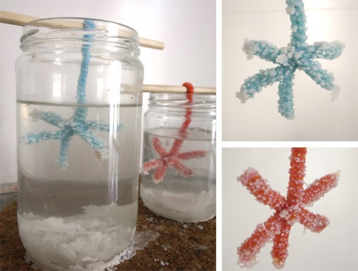

Facebook
Pinterest
Instagram
⌕ Search
ES
EN
DE
☰ Menu
Home
The House
Accessories
Decorate
Instruccions
Illustration
Custom water bottles
Notebook crafts and activities 01
App NOT ONLINE RIGHT NOW
Blog
Holidays
Christmas
Easter
Halloween
Carnival & costumes
Valentine’s Day
Birthday
Mother’s/Father’s Day
Back to school
Seasons
Spring
Summer
Autumn
Winter
What to do
Toys
Games
Printables
Food & recipes
Decoration
Painting
Experiments
Outdoors
Learning
Animals
Gifts & jewellery
Building & tricks
Other crafts
Material
Paper
Cardboard
Paper rolls
Recycling
Stones
Leaves & nature
Fabric & sewing
Home
›
Blog
›
Winter
Winter
Category
Occasion
Owls
Fruit
Tangerine house
Winter
Wooden house
Magnet
Skater figure
Winter
2015
Cardboard
Trees
Toy
Skier
Occasion
King Cake
Occasion
Snowman
Occasion
Happy New Year
Occasion
Merry Christmas
Occasion
Presents 02
Occasion
Presents
Occasion
Winter landscape
Occasion
Skier
Occasion
Winter window
Occasion
Snow garland
Occasion
Snowy owl
Occasion
Snow globe 02
Occasion
Star
Activity
snow
Occasion
Bookmark
Occasion
Snow globe
Activity
Star

Page 1 / 2
Older →